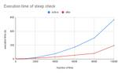

Money Forward Developers Blog
https://moneyforward-dev.jp/
株式会社マネーフォワード公式開発者向けブログです。技術や開発手法、イベント登壇などを発信します。サービスに関するご質問は、各サービス窓口までご連絡ください。
フィード
技術顧問giginetと取り組む “Evolution” できる環境づくり【iOSDC Japan 2024 パンフレットインタビュー完全版】 2
2
Money Forward Developers Blog
2024年8月22日(木)からiOSDC Japan 2024が始まりますね！今年のパンフレットでは2022年新卒入社で、マネーフォワード Pay for Businessの開発に携わるsakaiさんと、マネーフォワード技術顧問のgiginetさんのインタビューを掲載させていただきました。 今回はパンフレットには入り切らなかった内容を、ブログでご紹介できればと思います。ぜひご覧ください。 ※このインタビューは2024年5月に実施したものです 全員参加型、対面でのコミュニケーションを重視した技術顧問勉強会 ── giginetさんは技術顧問として、日々の業務相談はもちろん、定期的に勉強会を開催し…
2日前
Rubyエンジニア、Kotlinエンジニアへの道：Companion objectとは何なのか
Money Forward Developers Blog
こんにちは。福岡開発拠点でエンジニアの小林です。 これまではRubyで開発をしてきましたが、最近はサーバーサイドKotlinでの開発を行っています。 私にとってKotlinを使って実装するのは全くの初めてです。日々悪戦苦闘しながら学びを深めています。 Ruby一筋で育ってきたからなのか、Kotlinでの実装最中に「Rubyだとあんな風に書けるけど、これKotlinでどう書くんだろうな」だったり「なんでこういう書き方してるんだろうな」だったりを感じることが多くあるのですが、そういった場合におけるRubyエンジニア観点からの記事があまり見当たらないなと感じました。 そこで、私なりの視点でRubyエ…
5日前

Steepのメモリ使用量を改善するつもりが、実行速度の改善をしていた 26
Money Forward Developers Blog
こんにちは。id:Pocke です。 私は最近、Steep のメモリ使用量の改善に取り組んでいます。その過程で(意図せず) Steep の実行速度の改善に成功しました。 その中で行った、メモリ使用量の調査や、結果として実行速度が改善されたことは自分にとって中々楽しい体験でした。この記事では実行速度の改善に至るまでの経緯を紹介します。 記事中のソフトウェアは、執筆時点で最新のものを使用しています。具体的なバージョンは以下の通りです。 Ruby: 3.3.4 MemoryProfiler: 1.0.2 Steep: 1.8.0.dev.1 TL;DR メモリ使用量の調査のために、memory_pr…
12日前

Money Forward Tech Event vol.2 開催レポート
Money Forward Developers Blog
はじめに 春が終わったと思ったら一足飛びで夏が来ましたね。眩しい青空の下、暑い日が続きますが、皆さまお変わりなくお過ごしのことと存じます。 どうも、マネーフォワード ERP開発本部 ガーディアングループ クラウド経費チームのてっしーこと@tositeです。 さて、マネーフォワードでは去る2024年7月11日に、弊社CQOの高橋寿一を迎え「Money Forward Tech Event vol.2」と題した福岡開発拠点主催のテックイベントを開催しました！ moneyforward.connpass.com 👇第一回目のイベントはこちら 👇 moneyforward.connpass.com 今…
14日前
Money ForwardにおけるAWSセキュリティ統制システムA-SAFの紹介
Money Forward Developers Blog
はじめに こんにちは、Money Forward CISO室の万萌遠（バン・ホウエン）です。私は主にAWSセキュリティ統制システム「A-SAF(AWS-Security Alert Forwarding system)」の企画、開発、運用を担当してきました。運用も安定してきたので、今回はA-SAFシステムの紹介と、AWSをはじめとしたクラウド環境のセキュリティ統制についての心得を共有したいと思います。 A-SAFを作るモチベーション クラウド環境のセキュリティといえば、CSPM（Cloud Security Posture Management）、CWPP（Cloud Workload Pro…
17日前
「稲作」のメタファーで「現在・未来」の「ゲイン・ペイン」に注目したら、とても前向きにふりかえりできた
Money Forward Developers Blog
こんにちは、クラウド会計の開発チームでスクラムマスターをしているasatoです。 自作のふりかえりフレームワークがいい感じに機能したので紹介します 🙌 その名も「稲作（Rice Cultivation）」です。 背景 私はスクラムマスターとして、チームのふりかえりをファシリテーションする機会が多いです。当然のようにお気に入りのふりかえりフレームワークがあります。その辺は、個人のブログで語っています。 ブログでも語っている通り、私は「象・死んだ魚・嘔吐」が好きです。メタファーが想像力を掻き立ててくれます。 象🐘：誰も言わないので言いにくいと感じているが、大きな障害物だと思っているもの（英語の…
1ヶ月前
日本初のFlutterグローバルカンファレンス「FlutterNinjas Tokyo 2024」にゴールドスポンサーとして協賛しました！
Money Forward Developers Blog
こんにちは！いよいよ梅雨が本格化してきましたが、皆さんはいかがお過ごしでしょうか？マネーフォワードでFlutterエンジニアをしています小川(@heyhey1028)です。 6月はカンファレンスが目白押し。そんな中、2024年6月13日・14日に開催された、Flutterに特化したグローバルカンファレンス「FlutterNinjas Tokyo 2024」にマネーフォワードがゴールドスポンサーとして協賛しました。 マネーフォワードは今日からはじまる #FlutterNinjas にゴールドスポンサーをしています🥷📱ブースではクイズを行っているのでぜひ遊びにきてください🙌🎉 pic.twitte…
1ヶ月前
プログラマのための同値分割 自動化テストの基礎から学び直し
Money Forward Developers Blog
0. はじめに このブログ記事は、ソフトウェアエンジニアやテストエンジニアを対象に、同値分割法（Equivalence Partitioning, EP）というテスト設計技法の理解を深め、実際のプロジェクトでの応用を促進することを目的としています。同値分割法は、テストケースの数を効率的に削減しながら、ソフトウェアの品質を保証するための重要な手法です。 前提条件: 読者はソフトウェア開発の基本的なプロセスについて理解していること。 テストケース設計の基本的な概念について知っていること。 入力データの範囲や制約についての知識があること。 この記事を通じて、読者は以下の価値を得ることができます。 効…
1ヶ月前
マネーフォワードはKotlin Fest 2024に協賛・登壇します！
Money Forward Developers Blog
こんにちは！ Kotlin大好きAndroidエンジニアの宮本です。 2024年6月22日(土)に、Kotlin Fest 2024が開催されますね！ オフラインでの開催は約5年ぶりということで、楽しみにされている参加者も多いのではないでしょうか。 マネーフォワードはたまごスポンサーとして協賛しております！ マネーフォワードとKotlin マネーフォワードではAndroidアプリの開発だけでなく、いくつかのサービスのバックエンド開発にもKotlinを採用しています。 今後もKotlinを活用してより良いサービスを提供していくにあたり、今回Kotlin Fest 2024に協賛し多くのKotli…
2ヶ月前
パスキー利用状況レポート @ マネーフォワード ID (vol.5, Jun 2024)
Money Forward Developers Blog
はじめに こんにちは、マネーフォワード ID 開発チームの @nov です。 今年も WWDC の季節がやってきましたね。 WWDC 2024 Passkey Upgrade WWDC 2024 では、パスキーのセッションは以下のひとつだけです。 Streamline sign-in with passkey upgrades and credential managers - WWDC24 - Videos - Apple Developer 動画自体は短く、詳細な技術は明らかにされていませんが、パスワードマネージャーを使ってパスワードや TOTP、SMS OTP などを入力しているユーザー…
2ヶ月前
RubyKaigi 2024のコードレビュー企画の概要と解説を公開します
Money Forward Developers Blog
どうも、そろそろ梅雨に入ろうかという天気が多くなって憂鬱ですね。マネーフォワードで技術広報をしている @luccafort です。 RubyKaigi 2024に参加した方も、今年は参加できなかったという方も、いかがお過ごしですか？ 今年のマネーフォワードのブース設計のテーマは「Let's make it」でした。推しうちわやコードレビューなど皆さんと一緒に作り上げる！をテーマにブースを設計させていただきました。 立ち寄られた方は楽しんでいただけたでしょうか？ moneyforward-dev.jp ブース企画概要 今回マネーフォワードのブースでおこなったブース企画を簡単に説明します。 このイ…
2ヶ月前
Go Conference 2024にスポンサー&スタッフとしてマネーフォワードのメンバーが参加します
Money Forward Developers Blog
TL;DR こんにちは、京都で技術広報をしている @luccafort です。 この記事はGopherDay Taiwan 2024に登壇する前日に京都→東京間の移動中に書いています。 さて、弊社は6/8(土)に開催されるGo Conference 2024にブロンズスポンサーとして協賛します。 日本全国、世界各国のGophersとお会いできることを楽しみにしています。 残念ながらマネーフォワードはブース出展の抽選に外れてしまいましたが、代わり（？）に弊社から多くのメンバーがGo Conference 2024の運営スタッフとして参加しています。 当日皆さんと交流できると嬉しいので、ぜひ気軽に…
2ヶ月前
RubyKaigi 2024 参加レポート
Money Forward Developers Blog
こんにちは。クラウド経費本部でサーバサイドの開発をしているM-Yamashitaです。 2024年5月15日〜5月17日に沖縄県那覇市で開催されたRubyKaigi 2024に参加しました！ rubykaigi.org 私にとって、オフラインのRubyKaigi参加はこれが初めてでした。イベントに参加した興奮とセッション内容についていけなかった気持ちが入り混じり、まだ収拾がついていませんが、このイベントで感じたことを参加レポートとして残します。 ブース設置 on Day 0(5/14) 弊社マネーフォワードはプラチナスポンサーとして協賛しており、ブース出展させていただくことができました。 今回…
3ヶ月前
チームに新しく飛び込んだスクラムマスターが最初にやること
Money Forward Developers Blog
こんにちは、クラウド会計の開発チームでスクラムマスターをしているasatoです。 新しいチームにジョインするのって、ドキドキしますよね。新しい環境、新しい人々、そして新しい課題。それぞれのチームが直面している問題は異なりますが、スクラムマスターとして私たちが共有する目標は一つです。それは、チームの有効性を最大化し、素晴らしいプロダクトを生み出すこと。 私は今年の1月にマネーフォワードにジョインし、今のチームでスクラムマスターとして働くことになりました。事前に聞いていたチームの情報は以下の通りです。 プロダクトマネージャー、UI/UXデザイナー、複数のバックエンド/フロントエンド/QAエンジニア…
3ヶ月前
RubyMineでDocker Composeの複数のServiceを管理する
Money Forward Developers Blog
こんにちは、クラウド経費・クラウド債務支払でバックエンドエンジニアをしている@いいねです。 Docker Composeを使ってRailsの開発環境を準備することはよくあると思いますが、以下のように、docker-compose.ymlで複数のRailsアプリを管理したいことがあります。 docker-compose.yml version: '3.8' services: web: image: my-web-app:latest ports: - "80:80" command: bundle exec rails s -p 80 -b '0.0.0.0' api: image: my-a…
3ヶ月前
技術書典16で「Money Forward Techbook #8」を頒布します
Money Forward Developers Blog
こんにちは、技術広報の @luccafort です。 マネーフォワードの有志の社員が集まって立ち上げた「まねふぉ執筆部」では、技術書典で「Money Forward TechBook」を頒布してきました。 そして2024年5月25日より開催される技術書典16では、まねふぉ執筆部として8冊目となる「Money Forward Techbook #8」を出品します。 今回、残念ながらぼくは GopherDay Taiwan 2024 に登壇するため、オフライン会場での参加が叶いませんでしたが、オフライン当日は他の執筆者が代わりにブースに参加してくれています。 ぜひ会場に来られる方はお立ち寄りいただ…
3ヶ月前
多言語対応の翻訳ファイルを検査する linter を自作した
Money Forward Developers Blog
こんにちは、フロントエンドエンジニアの樫福です。マネーフォワードクラウド経費（以下、クラウド経費）というプロダクトのフロントエンドの開発をしています。 クラウド経費は多言語対応をしています。YAML や JSON 形式で書かれた翻訳ファイルを用意し、ユーザの設定に応じて画面表示を日本語か英語に切り替えるようにしています。 このたび、 i18n-locale-lint という翻訳ファイルの linter を開発しクラウド経費の開発に組み込みました。 npm パッケージとして公開しているので、ぜひ使ってみてください。 www.npmjs.com この記事では、ライブラリの開発に至った経緯や苦労話を…
3ヶ月前
マネーフォワードはRubyKaigi 2024にスポンサーします！沖縄で「Let's make it!」しよう
Money Forward Developers Blog
こんにちは、エンジニア採用広報をしている あちゃ です。 2024年5月15日(水)から5月17日(金)の3日間、 RubyKaigi 2024 が開催されます！マネーフォワードは昨年に引き続きPlatinum Sponsorsとしてスポンサーをしています! 今回のブログでは、RubyKaigi 2024に関するマネーフォワードメンバーの登壇者情報や、ブースコンテンツの紹介などをさせていただきます🙌 Pocke が登壇します！ RubyコミッターでRBSの開発者である id:Pocke が 「 Community-driven RBS repository」 と題して登壇します！ また、3日目…
3ヶ月前
京大マイコンクラブさんに協力してワークショップを開催しました
Money Forward Developers Blog
京都三条大橋のたもとで日々鴨川納涼床が組み上がっていく様子を眺めていた、鴨川の鴨ことwalkureです。こんにちわ🦆🦆。 さて、わたしたちマネーフォワード京都開発拠点は、4月25日に京都大学の学生が所属する、全学公認団体である京大マイコンクラブ（以下、KMC）が主体となり開催した新入生歓迎イベントの一環として、大学新入生やプログラミング初心者を対象にしたワークショップに協力いたしました。 KMCさんによる開催レポートはこちら。 KMCさんのワークショップに弊社エンジニアが協力しています。京都開発拠点のエンジニアから相談を受けて開催が決定した企画です。プログラミング未経験な学生の方のサポート役を…
3ヶ月前
Docker で起動した Phoenix アプリケーションでも IEx.pry や dbg でデバッグしたい！
Money Forward Developers Blog
こんにちは クラウド経費開発チーム ・ クラウド債務支払開発チーム の 宮村（みやむー） @miyamura.koyo です。 本業で Rails エンジニアをやる傍ら、コミュニティ の方で Elixir （フロントエンドも含め）で Web 開発を行っています。 最近では入門向けの書籍も充実してきたので、ご興味あればぜひ動かしてみてください！ gihyo.jp 今回は Elixir で Web 開発している最中に得た知見をご紹介します。 対象バージョン Elixir 1.16.2 OTP 26 IEx.pry Elixir には標準で IEx.pry/0 という関数が提供されています。 これは…
3ヶ月前
User Focusを意識しながら、さらなるスピードと品質の向上を目指す。【マネーフォワードCQOインタビュー】
Money Forward Developers Blog
マネーフォワードのさらなる品質向上を目指し、昨年CQO（Chief Quality Officer：最高品質責任者）が就任しました。就任から1年が経ち、改めてどんなことを考えて、これからどうしていくのかについて、お話を聞きました。 高橋 寿一 情報工学博士 フロリダ工科大学大学院にてCemKaner博士(探索的テスト手法考案者）、JamesWhittaker博士(How Google Tests Software著者）にソフトウェア品質の指導を受けたあと、広島市立大学にてソフトウェア品質研究により博士号取得。 Microsoft シアトル本社・SAPジャパンでソフトウェアテスト業務に従事、ソニ…
3ヶ月前
技術広報から見たNLP2024と技術カンファレンスの違い
Money Forward Developers Blog
TL;DR 2024年3月11日～15日に開催された言語処理学会第30回年次大会(以降、NLP2024)にブース展示や企業スポンサーのスタッフとして参加していました。 www.anlp.jp 弊社リサーチャー 山岸さんの参加レポートはこちらになります。 研究職の方向けの内容はこちらになっているので、ご興味をお持ちになった方はぜひご一読ください。 moneyforward-dev.jp 本記事の前提 本記事内では2つのカンファレンスが登場します。 概念として別物として扱いたいため、単にカンファレンスと称する場合はRubyKaigiやGo Conferenceのような技術カンファレンスを指し、学会…
4ヶ月前
Ruby や Rails のアップグレード情報を共有する場を作りました。
Money Forward Developers Blog
こんにちは。 id:Pocke です。最近のマイブームはルピシアのラムレーズンの紅茶です。1 Ruby や Rails のアップグレード情報を共有する場を作ったので、それをご紹介しようと思います。 背景 Ruby や Rails のアップグレードは単純な作業ではありません。 アップグレードには多くの変更が含まれています。変更はそのソフトウェアが成長している証ですが、一方で痛みもあります。Ruby や Rails を使うアプリケーションが、それらの変更に対応する必要があるためです。 そのようなアップグレード作業を楽にする取り組みはすでにいくつか存在します。 例えば Rails ガイドの Rail…
4ヶ月前
DevOps によるトイルの撲滅 〜駅マスタと銀行マスタ更新を例に〜
Money Forward Developers Blog
こんにちは クラウド経費開発チーム ・ クラウド債務支払開発チーム の 宮村（みやむー） @miyamura.koyo です。 私は現在ガーディアングループのグループリーダーとして、運用・改善活動に取り組んでいます。 ガーディアングループは一般的にいう保守・運用チームに近いです。 ただし、運用するだけでなく、DevOps を体現することを目指し、開発による改善や、開発内外とのコミュニケーションを重視して活動しています。 また、ガーディアングループではプロダクトの運用は開発だけで完結するものではないと捉えており、開発チームとのコミュニケーションはもちろん、 PdM / カスタマーサポート / カ…
4ヶ月前
マネーフォワードから2名がTSKaigi 2024にてLT登壇します！
Money Forward Developers Blog
こんにちは、Pay事業本部でフロントエンドエンジニアをしている姫野です。 2024年5月11日（土）に開催されるTSKaigi 2024にて、マネーフォワードのPay事業本部から、私とfujiyamaorangeの2名が登壇させていただくことになりました。 TSKaigiとは TSKaigiは、日本最大級のTypeScriptをテーマとした技術カンファレンスです。 コロナ禍で様々なオフラインイベントが打撃を受ける中、TypeScriptを扱うエンジニアが会場で集まる機会は失われていきました。 新型コロナウイルスが落ち着いた今、各所で蓄積されたノウハウが日の目を浴び、より生き生きとTSエンジニア…
4ヶ月前
開発生産性が上がるって分かったので GitHub Copilot Business を積極活用しています
Money Forward Developers Blog
エンジニアリング戦略室の高井といいます。 みなさん、GitHub Copilot は利用されていますか？ GitHub Copilot は GitHub と OpenAI が共同で開発した生成 AI を活用した開発支援ツールです。コードの自動補完、コード生成、ドキュメントの提案など、多岐にわたる機能を提供し、開発者の生産性を向上させることを目的としています。 マネーフォワードでは、昨年度にトライアルとして Copilot の利用を開始しました。本記事では、Copilot を利用して半年以上経過して、その利用がどのような効果をもたらしたかをレポートします。なお、ここで GitHub Copilo…
4ヶ月前
マネーフォワードの長期インターン生がOIDCのためのOSSを開発しました
Money Forward Developers Blog
はじめに こんにちは、マネーフォワード関西開発拠点のAPI推進部でインターンをしている進捗ゼミです。 私たちのチームでは、マネーフォワードのプロダクトがサードパーティーアプリケーションとAPIを通じて連携するための仕組みを作成しています。 私は、このチームで学んだことを活かして、Mini OAuth2 ProxyというOSSプロダクトを個人的に作成しました。 この記事では、インターンの経験を交えながら、Mini OAuth2 Proxyについて紹介します。 TL;DR OAuth2 ProxyはOIDC（OpenID Connect）による認証を簡単に追加することができる便利なOSSです OA…
4ヶ月前
10年もののRailsアプリの持続可能性を求めて -なぜ初手でCoffeeScript廃止を選んだのか-
Money Forward Developers Blog
シニアソフトウェアエンジニアのusadamasaです｡ マネーフォワード クラウド会計とそれに関連するマイクロサービス群の開発運用を担当しています｡ 本記事では､クラウド会計という10年もののRailsアプリの持続可能性をいかにして確保していくかの取り組みをご紹介します｡ TL;DR 私が所属するチームでは､クラウド会計の開発運用における課題を整理し､それぞれの課題に対して解決策を検討し､実行するための取り組みを進めています｡ 最初にクラウド会計の全体の構造を明らかにし､課題を可視化､組織の共通認識としました｡ その上で銀の弾丸を求めるのではなく､有期かつ漸進的な改善のプロジェクトとして計画す…
4ヶ月前
try! Swift Tokyo 2024登壇レポート
Money Forward Developers Blog
はじめに こんにちは、マネーフォワードでモバイルアプリエンジニアをしているサカイです。 普段は「マネーフォワード Pay for Business」のiOSアプリ開発を担当しており、プライベートでは「2024年の恵方コンパス」というiOSアプリの開発・運用をしています。 さて、先日try! Swift Tokyo 2024に参加、およびLT枠にて登壇しました。これはSwiftを使う開発者が国内外から集まる国際カンファレンスで、今年は3/22〜3/24での開催でした。 また、マネーフォワードはシルバースポンサーを務めました。 この記事ではLTのプロポーザル提出時に意識していたことや登壇当日に感じ…
4ヶ月前
「ハンドラー」から見るインシデント対応 ―起こってしまったその時に―
Money Forward Developers Blog
はじめに 皆さんこんにちは。 春の陽気に誘われて、思わず家族もいないのにファミリーカーを買った挙げ句、車中泊仕様に改造してしまった、クラウド経費本部 プロダクト開発部 ガーディアングループの@tosite（てっしー）と申します。 最近は福岡開発拠点でも徐々に英語化が進んできており、意識的に英語を話すようになりました。 私が所属しているガーディアングループのエンジニアは、一般的にはCRE（Customer Reliability Engineering）と呼ばれる領域の業務を担当しています。 お問い合わせや技術的負債の解消だけでなく、機能改修や機能追加、パフォーマンス改善など「攻めの運用」も含め…
4ヶ月前